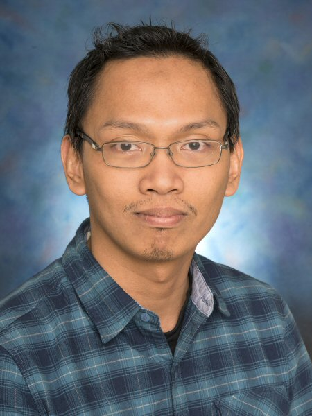

Assistant Professor, Kulliyyah of Engineering
International Islamic University Malaysia (IIUM)
"Exploring fluid dynamics from supersonic jets to magnetohydrodynamic flows."

Get to Know Me
Dr. Mohd Azan Bin Mohammed Sapardi is an Assistant Professor at the Kulliyyah of Engineering, International Islamic University Malaysia (IIUM). He holds a Ph.D. in Engineering from Monash University, Melbourne, specializing in computational fluid dynamics and flow stability. His research spans supersonic jet flows, magnetohydrodynamic (MHD) duct flows, wake-induced vibration energy harvesting, and passive flow control strategies. He actively supervises PhD and Master's students and has led multiple research projects funded by national grants.
Ph.D in Engineering
Monash University, Melbourne
Master of Engineering
University of Malaya (UM)
Bachelor of Engineering (Mechatronics)
International Islamic University Malaysia (IIUM)
What I Work On
High-fidelity numerical simulations of complex fluid flow phenomena using advanced CFD methods.
Experimental and computational studies of jet behaviour, Mach estimation, and multi-jet interactions.
MHD duct flows, flow stability in strong magnetic fields, and cylinder wake structures.
Linear stability analysis of confined flows around sharp bends and complex geometries.
Harnessing vortex-induced vibrations for sustainable piezoelectric energy generation.
Base pressure control, cavity-based methods, and D-shaped rib configurations at supersonic speeds.